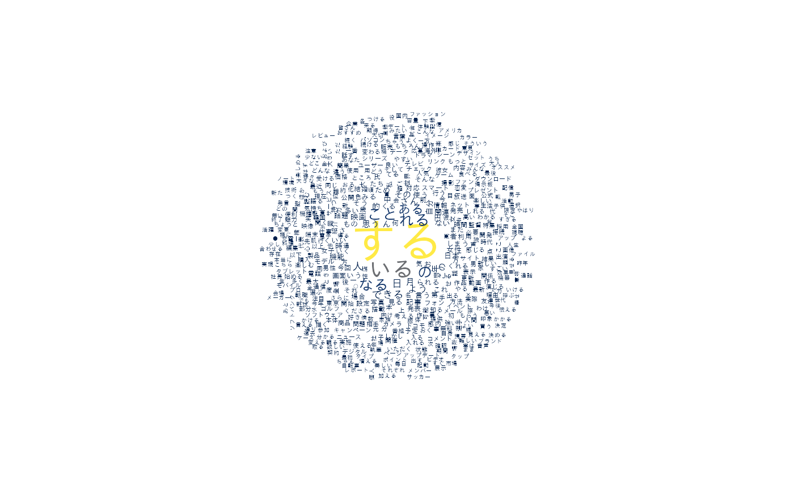
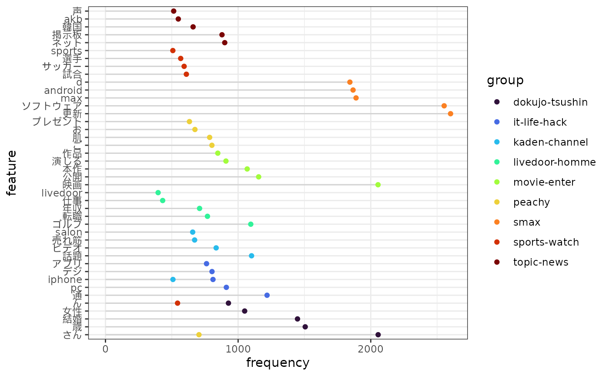
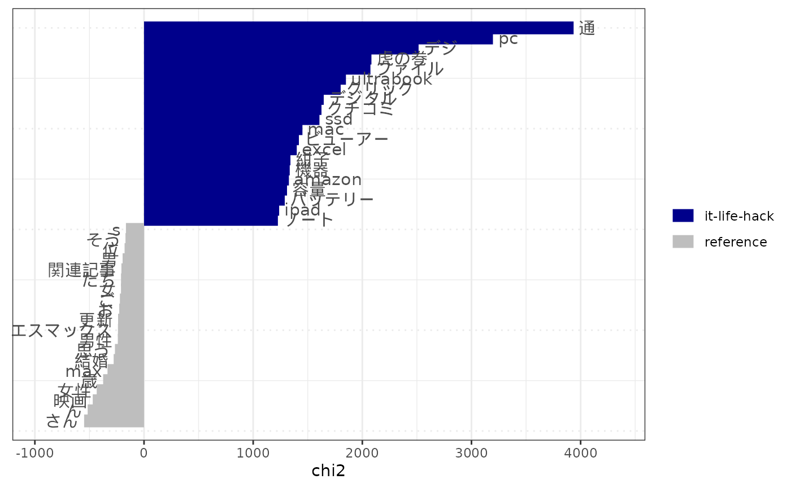
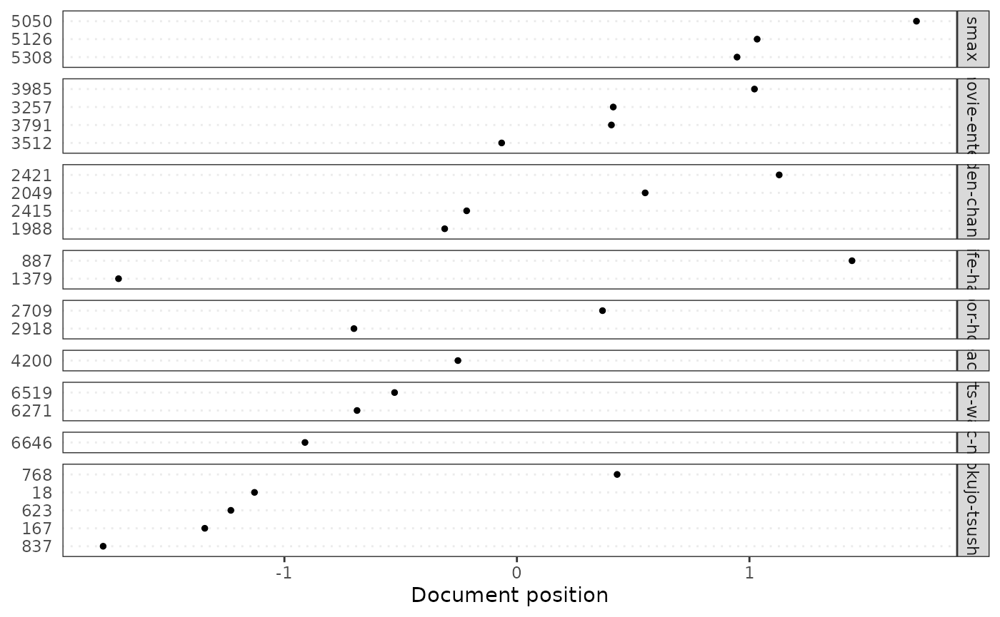
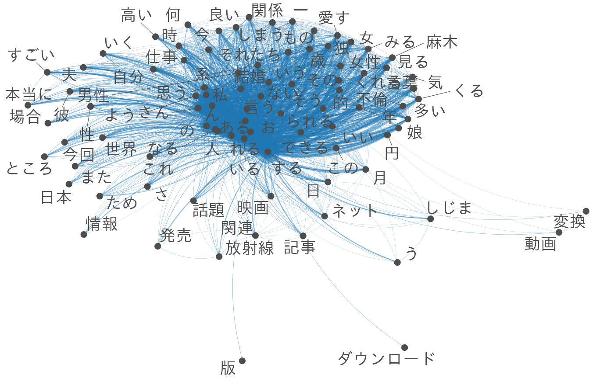
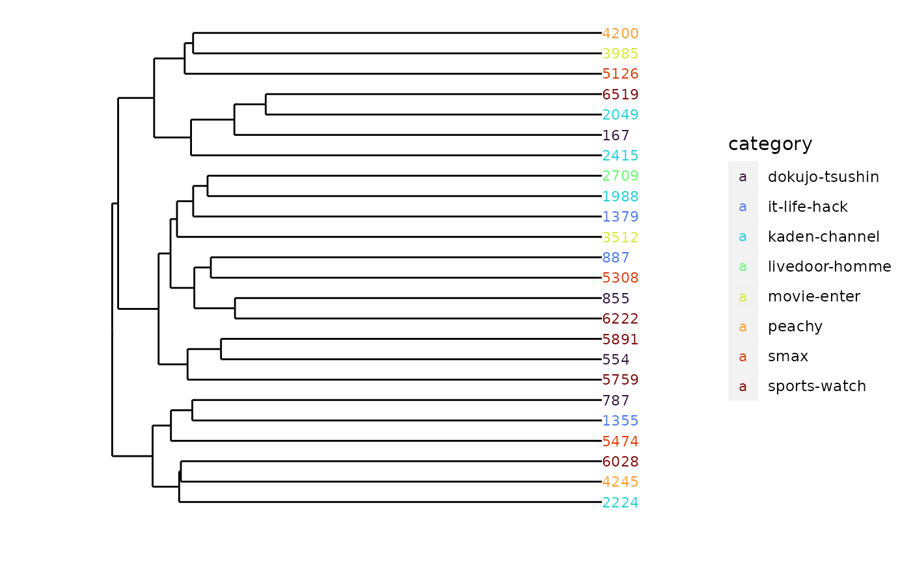
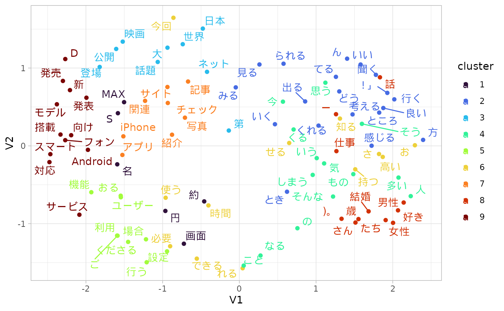

Text Mining with quanteda and gibasa
paithiov909
2022-09-09
Source:vignettes/quanteda.Rmd
quanteda.Rmdはじめに
quantedaとgibasaを用いたテキストマイニングの例です。
なお、以下のパッケージについては、ここではGitHubからインストールできるものを使っています。
これらは、次のような感じでインストールできます。
# Enable repository from paithiov909
options(repos = c(
ropensci = "https://paithiov909.r-universe.dev",
CRAN = "https://cloud.r-project.org"))
# Download and install ldccr in R
install.packages("ldccr")この記事は、こういう使い方ができるというメモのようなもので、やっていることの意味についての説明はしていません。また、quantedaはtokenizersをラップした関数によって日本語の文書でも分かち書きできるので、手元の辞書に収録されている表現どおりに分かち書きしたい場合や、品詞情報が欲しい場合でないかぎりは、形態素解析器を使うメリットはあまりないかもしれません。tokenizers（内部的にはstringi）が利用しているICUのBoundary Analysisの仕様については、UAX#29などを参照してください。
データの準備
テキストデータとしてlivedoorニュースコーパスを使います。以下の9カテゴリです。
- トピックニュース
- Sports Watch
- ITライフハック
- 家電チャンネル
- MOVIE ENTER
- 独女通信
- エスマックス
- livedoor HOMME
- Peachy
ldccrでデータフレームにします。
if (requireNamespace("ldccr", quietly = TRUE)) {
data <- ldccr::read_ldnws()
}
#> Parsing dokujo-tsushin...
#> Parsing it-life-hack...
#> Parsing kaden-channel...
#> Parsing livedoor-homme...
#> Parsing movie-enter...
#> Parsing peachy...
#> Parsing smax...
#> Parsing sports-watch...
#> Parsing topic-news...
#> Done.このうち一部だけをquantedaのコーパスオブジェクトとして格納し、いろいろ試していきます。このとき、あらかじめ「■」という文字だけ取り除いておきます。
corp <- data |>
dplyr::select(category, body) |>
dplyr::mutate(doc_id = as.factor((dplyr::row_number()))) |>
dplyr::slice_sample(prop = .2)
corp <- corp |>
dplyr::mutate(
body = stringr::str_remove_all(body, "[\u25a0]+"),
body = audubon::strj_normalize(body)
) |>
gibasa::tokenize(body) |>
gibasa::prettify(col_select = c("POS1", "Original")) |>
dplyr::filter(!POS1 %in% c("助詞", "助動詞")) |>
tidyr::drop_na() |>
gibasa::pack(Original) |>
dplyr::left_join(corp, by = "doc_id") |>
quanteda::corpus()ワードクラウド
corp |>
quanteda::tokens(what = "fastestword", remove_punct = TRUE) |>
quanteda::dfm() |>
quanteda::dfm_group(groups = category) |>
quanteda::dfm_trim(min_termfreq = 10L) |>
quanteda.textplots::textplot_wordcloud(color = viridisLite::cividis(8L))
出現頻度の集計
corp |>
quanteda::tokens(what = "fastestword", remove_punct = TRUE) |>
quanteda::dfm() |>
quanteda::dfm_weight("prop") |>
quanteda.textstats::textstat_frequency(groups = category) |>
dplyr::top_n(-30L, rank) |>
ggpubr::ggdotchart(
x = "feature",
y = "frequency",
group = "group",
color = "group",
rotate = TRUE
) +
ggplot2::theme_bw()
Keyness
ITライフハック（it-life-hack）グループの文書とその他の対照を見ています。
corp |>
quanteda::tokens(what = "fastestword", remove_punct = TRUE) |>
quanteda::dfm() |>
quanteda::dfm_group(groups = category) |>
quanteda.textstats::textstat_keyness(target = "it-life-hack") |>
quanteda.textplots::textplot_keyness()
対応分析
全部をプロットすると潰れて見えないので一部だけを抽出しています。
ちなみに、require(ca)としてからquatenda.textmodels::textmodel_caの結果をplotに渡すと、バイプロットを出力することもできます。
corp_sample <- quanteda::corpus_sample(corp, size = 32L)
corp_sample |>
quanteda::tokens(what = "fastestword", remove_punct = TRUE) |>
quanteda::dfm() |>
quanteda::dfm_weight(scheme = "prop") |>
quanteda.textmodels::textmodel_ca() |>
quanteda.textplots::textplot_scale1d(
margin = "documents",
groups = quanteda::docvars(corp_sample, "category")
)
共起ネットワーク
共起ネットワークもあまり大きな文書集合だと潰れて見えないので、対応分析と同じコーパスについて描画してみます。
corp_sample |>
quanteda::tokens(what = "fastestword", remove_punct = TRUE) |>
quanteda::dfm() |>
quanteda::dfm_group(groups = category) |>
quanteda::dfm_trim(min_termfreq = 15L) |>
quanteda::fcm() |>
quanteda.textplots::textplot_network()
#> Warning: ggrepel: 1 unlabeled data points (too many overlaps). Consider
#> increasing max.overlaps
クラスタリング
マンハッタン距離、ward法（ward.D2）です。ここでも一部だけを抽出しています。
d <- corp_sample |>
quanteda::tokens(what = "fastestword", remove_punct = TRUE) |>
quanteda::dfm() |>
quanteda::dfm_weight(scheme = "prop") |>
quanteda.textstats::textstat_dist(method = "manhattan") |>
as.dist() |>
hclust(method = "ward.D2") |>
ggdendro::dendro_data(type = "rectangle") |>
(function(x) {
purrr::list_modify(
x,
labels = dplyr::bind_cols(
x$labels,
names = names(corp_sample),
category = quanteda::docvars(corp_sample, "category")
)
)
})()
ggplot2::ggplot(ggdendro::segment(d)) +
ggplot2::geom_segment(aes(x = x, y = y, xend = xend, yend = yend)) +
ggplot2::geom_text(ggdendro::label(d), mapping = aes(x, y, label = names, colour = category, hjust = 0), size = 3) +
ggplot2::coord_flip() +
ggplot2::scale_y_reverse(expand = c(.2, 0)) +
ggdendro::theme_dendro()
LDA（Latent Dirichlet Allocation）
LDAについてはquanteda::convertでdfmを変換してtopicmodels::LDAに直接渡すこともできます。公式のクイックスタートガイドも参考にしてください。weighted LDAなどの実装を含むkeyATMといった選択肢もあります。
なお、トピック数は9に決め打ちしています。トピック数含めパラメタの探索をしたい場合には、ldatuningやstmなどを利用したほうがよいです。
dtm <- corp |>
quanteda::tokens(what = "fastestword", remove_punct = TRUE) |>
quanteda::dfm() |>
quanteda::dfm_tfidf()
features <- corp |>
quanteda::tokens(what = "fastestword", remove_punct = TRUE) |>
quanteda::dfm() |>
quanteda::ntoken()
m <- dtm |>
as("dgCMatrix") |>
textmineR::FitLdaModel(k = 9, iterations = 200, burnin = 175)
m$phi |>
textmineR::GetTopTerms(15L) |>
reactable::reactable(compact = TRUE)LDAvisで可視化してみます（デフォルトエンコーディングがCP932であるWindows環境の場合、LDAvis::createJSONで書き出されるラベル（vocab）のエンコーディングがそっちに引きずられてCP932になってしまうため、ブラウザで表示したときにラベルが文字化けします。書き出されたlda.jsonをUTF-8に変換すれば文字化けは解消されるので、その場合は、あとから変換して上書きするとよいです）。
suppressWarnings({
LDAvis::createJSON(
phi = m$phi,
theta = m$theta,
doc.length = features,
vocab = stringi::stri_enc_toutf8(dtm@Dimnames$features),
term.frequency = quanteda::colSums(dtm)
) |>
LDAvis::serVis(open.browser = FALSE, out.dir = file.path(getwd(), "cache/ldavis"))
})
if (getRversion() < "4.2.0") {
readr::read_lines_raw(file.path(getwd(), "cache/ldavis", "lda.json")) %>%
iconv(from = "CP932", to = "UTF-8") %>%
jsonlite::parse_json(simplifyVector = TRUE) %>%
jsonlite::write_json(file.path(getwd(), "cache/ldavis", "lda.json"), dataframe = "columns", auto_unbox = TRUE)
}GloVe
ここでは50次元の埋め込みを得ます。
toks <- corp |>
quanteda::tokens(what = "fastestword", remove_punct = TRUE) |>
as.list() |>
text2vec::itoken()
vocab <- toks |>
text2vec::create_vocabulary() |>
text2vec::prune_vocabulary(term_count_min = 10L)
vectorize <- text2vec::vocab_vectorizer(vocab)
tcm <- text2vec::create_tcm(
it = toks,
vectorizer = vectorize,
skip_grams_window = 5L
)
glove <- text2vec::GlobalVectors$new(
rank = 50,
x_max = 15L
)
wv_main <- glove$fit_transform(
x = tcm,
n_iter = 10L
)
#> INFO [18:09:47.269] epoch 1, loss 0.1360
#> INFO [18:09:47.909] epoch 2, loss 0.0844
#> INFO [18:09:48.529] epoch 3, loss 0.0719
#> INFO [18:09:49.142] epoch 4, loss 0.0646
#> INFO [18:09:49.757] epoch 5, loss 0.0596
#> INFO [18:09:50.369] epoch 6, loss 0.0560
#> INFO [18:09:50.984] epoch 7, loss 0.0532
#> INFO [18:09:51.620] epoch 8, loss 0.0510
#> INFO [18:09:52.242] epoch 9, loss 0.0491
#> INFO [18:09:52.864] epoch 10, loss 0.0476
wv <- (wv_main + t(glove$components)) |>
as.data.frame(stringsAsFactors = FALSE) |>
tibble::as_tibble(.name_repair = "minimal", rownames = NA)uwotで次元を減らして可視化します。色はstats::kmeansでクラスタリング（コサイン距離）して付けています。
vec <- vocab |>
dplyr::arrange(desc(term_count)) |>
dplyr::slice_head(n = 100L) |>
dplyr::left_join(tibble::rownames_to_column(wv), by = c("term" = "rowname")) |>
dplyr::select(!c("term_count", "doc_count"))
labs <- vec$term
vec <- dplyr::select(vec, !term)
dist <- 1 - proxyC::simil(as(as.matrix(vec), "dgCMatrix"), method = "cosine")
clust <- kmeans(x = dist, centers = 9)
vec <- uwot::umap(vec) |>
as.data.frame() |>
dplyr::mutate(rowname = labs, cluster = as.factor(clust$cluster))
vec |>
ggplot2::ggplot(aes(x = V1, y = V2, colour = cluster)) +
ggplot2::geom_point() +
ggrepel::geom_text_repel(aes(label = rowname)) +
ggplot2::theme_light()
セッション情報
sessioninfo::session_info()
#> ─ Session info ───────────────────────────────────────────────────────────────
#> setting value
#> version R version 4.2.1 (2022-06-23)
#> os Ubuntu 20.04.5 LTS
#> system x86_64, linux-gnu
#> ui X11
#> language en
#> collate C.UTF-8
#> ctype C.UTF-8
#> tz UTC
#> date 2022-09-09
#> pandoc 2.14.2 @ /usr/bin/ (via rmarkdown)
#>
#> ─ Packages ───────────────────────────────────────────────────────────────────
#> package * version date (UTC) lib source
#> abind 1.4-5 2016-07-21 [2] RSPM
#> audubon 0.3.0 2022-07-22 [2] RSPM
#> backports 1.4.1 2021-12-13 [2] RSPM
#> bit 4.0.4 2020-08-04 [2] RSPM
#> bit64 4.0.5 2020-08-30 [2] RSPM
#> broom 1.0.1 2022-08-29 [2] RSPM
#> bslib 0.4.0 2022-07-16 [2] RSPM
#> cachem 1.0.6 2021-08-19 [2] RSPM
#> car 3.1-0 2022-06-15 [2] RSPM
#> carData 3.0-5 2022-01-06 [2] RSPM
#> cli 3.3.0 2022-04-25 [2] RSPM
#> coda 0.19-4 2020-09-30 [2] RSPM
#> codetools 0.2-18 2020-11-04 [3] CRAN (R 4.2.1)
#> colorspace 2.0-3 2022-02-21 [2] RSPM
#> crayon 1.5.1 2022-03-26 [2] RSPM
#> curl 4.3.2 2021-06-23 [2] RSPM
#> data.table 1.14.2 2021-09-27 [2] RSPM
#> desc 1.4.2 2022-09-08 [2] CRAN (R 4.2.1)
#> digest 0.6.29 2021-12-01 [2] RSPM
#> dplyr 1.0.10 2022-09-01 [2] RSPM
#> ellipsis 0.3.2 2021-04-29 [2] RSPM
#> evaluate 0.16 2022-08-09 [2] RSPM
#> fansi 1.0.3 2022-03-24 [2] RSPM
#> farver 2.1.1 2022-07-06 [2] RSPM
#> fastmap 1.1.0 2021-01-25 [2] RSPM
#> fastmatch 1.1-3 2021-07-23 [2] RSPM
#> float 0.3-0 2022-04-07 [2] RSPM
#> FNN 1.1.3.1 2022-05-23 [2] RSPM
#> foreach 1.5.2 2022-02-02 [2] RSPM
#> fs 1.5.2 2021-12-08 [2] RSPM
#> generics 0.1.3 2022-07-05 [2] RSPM
#> ggdendro 0.1.23 2022-02-16 [2] RSPM
#> ggplot2 * 3.3.6 2022-05-03 [2] RSPM
#> ggpubr 0.4.0 2020-06-27 [2] RSPM
#> ggrepel 0.9.1 2021-01-15 [2] RSPM
#> ggsignif 0.6.3 2021-09-09 [2] RSPM
#> gibasa 0.5.0 2022-09-09 [1] local
#> glmnet 4.1-4 2022-04-15 [2] RSPM
#> glue 1.6.2 2022-02-24 [2] RSPM
#> gtable 0.3.1 2022-09-01 [2] RSPM
#> highr 0.9 2021-04-16 [2] RSPM
#> hms 1.1.2 2022-08-19 [2] RSPM
#> htmltools 0.5.3 2022-07-18 [2] RSPM
#> htmlwidgets 1.5.4 2021-09-08 [2] RSPM
#> iterators 1.0.14 2022-02-05 [2] RSPM
#> jquerylib 0.1.4 2021-04-26 [2] RSPM
#> jsonlite 1.8.0 2022-02-22 [2] RSPM
#> knitr 1.40 2022-08-24 [2] RSPM
#> labeling 0.4.2 2020-10-20 [2] RSPM
#> lattice 0.20-45 2021-09-22 [3] CRAN (R 4.2.1)
#> ldccr 0.0.9.20220709 2022-09-09 [2] Github (paithiov909/ldccr@c435de5)
#> lgr 0.4.4 2022-09-05 [2] RSPM
#> LiblineaR 2.10-12 2021-03-02 [2] RSPM
#> lifecycle 1.0.1 2021-09-24 [2] RSPM
#> magrittr 2.0.3 2022-03-30 [2] RSPM
#> MASS 7.3-57 2022-04-22 [3] CRAN (R 4.2.1)
#> Matrix 1.4-1 2022-03-23 [3] CRAN (R 4.2.1)
#> memoise 2.0.1 2021-11-26 [2] RSPM
#> mlapi 0.1.1 2022-04-24 [2] RSPM
#> munsell 0.5.0 2018-06-12 [2] RSPM
#> network 1.17.2 2022-05-21 [2] RSPM
#> nsyllable 1.0.1 2022-02-28 [2] RSPM
#> pillar 1.8.1 2022-08-19 [2] RSPM
#> pkgconfig 2.0.3 2019-09-22 [2] RSPM
#> pkgdown 2.0.6 2022-07-16 [2] any (@2.0.6)
#> proxyC 0.3.2 2022-09-05 [2] RSPM
#> purrr 0.3.4 2020-04-17 [2] RSPM
#> quanteda 3.2.3 2022-08-29 [2] RSPM
#> quanteda.textmodels 0.9.5 2022-08-29 [2] RSPM
#> quanteda.textplots 0.94.2 2022-09-01 [2] RSPM
#> quanteda.textstats 0.95 2021-11-24 [2] RSPM
#> R.cache 0.16.0 2022-07-21 [2] RSPM
#> R.methodsS3 1.8.2 2022-06-13 [2] RSPM
#> R.oo 1.25.0 2022-06-12 [2] RSPM
#> R.utils 2.12.0 2022-06-28 [2] RSPM
#> R6 2.5.1 2021-08-19 [2] RSPM
#> ragg 1.2.2 2022-02-21 [2] RSPM
#> Rcpp 1.0.9 2022-07-08 [2] RSPM
#> RcppParallel 5.1.5 2022-01-05 [2] RSPM
#> RcppProgress 0.4.2 2020-02-06 [2] RSPM
#> reactable 0.3.0 2022-05-26 [2] RSPM
#> reactR 0.4.4 2021-02-22 [2] RSPM
#> readr 2.1.2 2022-01-30 [2] RSPM
#> RhpcBLASctl 0.21-247.1 2021-11-05 [2] RSPM
#> rlang 1.0.5 2022-08-31 [2] RSPM
#> rmarkdown 2.16 2022-08-24 [2] RSPM
#> rprojroot 2.0.3 2022-04-02 [2] RSPM
#> rsparse 0.5.0 2021-11-30 [2] RSPM
#> RSpectra 0.16-1 2022-04-24 [2] RSPM
#> rstatix 0.7.0 2021-02-13 [2] RSPM
#> sass 0.4.2 2022-07-16 [2] RSPM
#> scales 1.2.1 2022-08-20 [2] RSPM
#> sessioninfo 1.2.2 2021-12-06 [2] any (@1.2.2)
#> shape 1.4.6 2021-05-19 [2] RSPM
#> sna 2.7 2022-06-01 [2] RSPM
#> SparseM 1.81 2021-02-18 [2] RSPM
#> statnet.common 4.7.0 2022-09-08 [2] CRAN (R 4.2.1)
#> stopwords 2.3 2021-10-28 [2] RSPM
#> stringi 1.7.8 2022-07-11 [2] RSPM
#> stringr 1.4.1 2022-08-20 [2] RSPM
#> styler 1.7.0 2022-03-13 [2] any (@1.7.0)
#> survival 3.3-1 2022-03-03 [3] CRAN (R 4.2.1)
#> systemfonts 1.0.4 2022-02-11 [2] RSPM
#> text2vec 0.6.1 2022-04-21 [2] RSPM
#> textmineR 3.0.5 2021-06-28 [2] RSPM
#> textshaping 0.3.6 2021-10-13 [2] RSPM
#> tibble 3.1.8 2022-07-22 [2] RSPM
#> tidyr 1.2.0 2022-02-01 [2] RSPM
#> tidyselect 1.1.2 2022-02-21 [2] RSPM
#> tzdb 0.3.0 2022-03-28 [2] RSPM
#> utf8 1.2.2 2021-07-24 [2] RSPM
#> uwot 0.1.14 2022-08-22 [2] RSPM
#> V8 4.2.1 2022-08-07 [2] RSPM
#> vctrs 0.4.1 2022-04-13 [2] RSPM
#> viridisLite 0.4.1 2022-08-22 [2] RSPM
#> vroom 1.5.7 2021-11-30 [2] RSPM
#> withr 2.5.0 2022-03-03 [2] RSPM
#> xfun 0.32 2022-08-10 [2] RSPM
#> yaml 2.3.5 2022-02-21 [2] RSPM
#>
#> [1] /tmp/RtmpuEEOzj/temp_libpath4e2b4bf88a16
#> [2] /home/runner/work/_temp/Library
#> [3] /opt/R/4.2.1/lib/R/library
#>
#> ──────────────────────────────────────────────────────────────────────────────